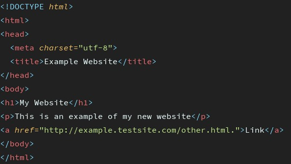
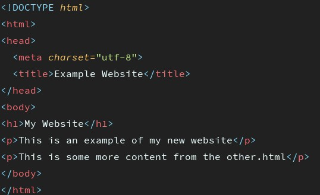
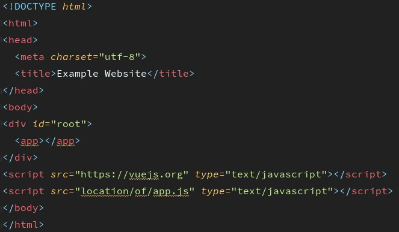

Немного истории
С начала времен стандартным подходом подготовки html для просмотра пользователем был рендер на стороне сервера. Мы
закидывали на сервер html страницы, а он раздавал их браузеру как html документы. В те времена рендер на стороне
сервера работал отлично. Большинство сайтов были наборами статического текста и картинок, с минимальной
интерактивностью.
В совремнном вебе все не так, слово сайт осталось как дань прошлому, теперь каждый 'сайт' это веб-приложение
которое маскируется под сайт. Мы покупаем, продаем, проверяем сообщения, общаемся в чатах итд, и все это на
'сайтах'. Колличество двигающихся шестеренок на современном 'сайте', за которыми нужно следить разработчику, у
новичка может вызвать приступ панического страха, не без оснований.
Именно из-за сдвига в сторону полной интерактивности, рендер на стороне клиента становится все более популярен.
Почему? Какой метод все-таки лучше? Так же как и с большинством решений при разработке - зависит от задачи и
желаемого результата.
Server-side rendering
Когда мы заходим на сайт, браузер посылает запрос серверу на котором находятся ресурсы веб страницы. В большинстве
случаев этот запрос очень быстрый, но на скорость могут влиять следующие факторы:
- ваша скорость подключения к интернету
- место на сервере где хранятся ресурсы
- сколько пользователей в данный момент тоже хотят получить эти данные
- и конечно насколько оптимизирован сайт
Когда запрос был обработан сервером, ваш браузер получет полностью готовый html и отображает его. Когда вы решите
перейти на другую страницу на этом сайте, браузер опять создаст запрос на сервер, но уже на другие ресурсы. Так
будет происходить каждый раз когда вы посещаете новую страницу которой нету в кеше браузера.
И не важно что на новая страница отличается от предыдущей всего одним елементом, браузер попросит у сервера
страницу полностью,и так каждый раз...
SSR in details
Первая страница, рут example.testsite.com. Если бы мы ввели example.testsite.com в адресную
строку, то наш
браузер послал бы запрос на сервер и ожидал ответа. Результатом был бы документ. В этом случае у нас визуально
отобразится заголовок, параграф и ссылка.

Вторая страница. Разница только в том что нету ссылки, вместо нее еще один параграф. Логично подумать что нам
необходимо визуально заменить только ссылку на параграф и все ок. К сожалению SSR так не работает. Что произошло
бы - полная перезагрузка страницы и отображение результата запроса на
сервер, новая веб страница.

Client-side rendering
Когда мы говорим рендер на стороне клиента, имеется ввиду рендер контента в окне браузера используя JavaScript.
Вместо того чтобы получить полностью готовый html документ, мы получаем bootstrap html документ и файл JavaScript
который будет рендерить содержимое документа используя сам браузер.
Таким образом за содержимое веб страницы в браузере отвечает не сервер, а клиент. Что позволяет использовать
современные подходы при разработке веб-приложений.
Этот подход относительно новый. Он стал популярен когда появились JavaScript библиотеки несущие в себе необходимый
функционал. К примеру React.js и Vue.js, а так же многие другие.
CSR in details
С первого взгляда можно увидеть координальные изменения в html документе. Вместо привычного контента внутри html
файла, у нас div-контейнер с идентификатором root. Плюс набор тегов script перед закрывающим тегом body. В нашем
примере один подгрузит файл библиотеки Vue.js, второй подгрузит файл app.js в котором содержится логика
приложения.
Это координально отличается от рендера на стороне сервера, потому что теперь сервер отвечает только за загрузку
минимального набора ресурсов необходимых для 'старта приложения' и обращения к базе данных по закросу клиента. Все
остальное ложится на плечи библиотеки JavaScript, в нашем случае Vue.js, которая и будет отвечать за рендер на
стороне клиента, и кастомного кода написаного вами в файле app.js.

SEO
SSR
Рендер на стороне сервера очень хорош для SEO. Контент страницы доступен до того как мы его получим, поэтому
поисковики могут хорошо индексировать такие страницы.
CSR
Контент не рендерится до того момента пока веб-страница не загрузится в браузере. Это ударит по SEO, поисковикам
будет тяжелее индексировать такие страницы. Есть специальные методы борьбы с этой проблемой.
Так же стоит помнить что ваше приложение не сможет исполнится до полной загрузки всего JavaScript. Если у ваших
юзеров плохое подключение к интернету, это может начальную загрузку страницы продолжительной(секунды), зато потом
все будет молниеносно быстро.
Pros and Cons
- SSR pros:
- Поисковые роботы могут лучше индексировать страницы.
- Первая загрузка страницы быстрее.
- Хорошо подхоит для статических сайтов с минимальной интерактивностью.
- SSR cons:
- Частые запросы на сервер.
- Низкое время загрузки страницы.
- Полная перезагрузка страниц как реакция на действия пользователя.
- Плохое решение для веб-приложений с высоким уровнем интерактивности.
- CSR pros:
- Отлично подходит для интерактивных интерфейсов.
- Молниеносный рендер страницы после первой загрузки.
- Хорошее решение для веб-приложений.
- Большой выбор хорошо зарекомендовавших себя JavaScript библиотек.
- CSR cons:
- Плохая поддрежка SEO, если сдело без использования подходов оптимизации.
- Первая загрузка может занять больше времени чем SSR.
- В большинстве случаев требует использование внешней библиотеки.